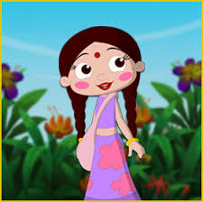

CHUTKI

Description: Chutki is Bheem's best friend and a close companion. She is known for her intelligence, resourcefulness, and caring nature.
Personality: Smart, kind-hearted, and quick-witted. Chutki often supports Bheem and their friends with her ideas and practical solutions.
Characteristics: Chutki usually wears a pink dress and has braided hair adorned with flowers. She is often seen cooking delicious sweets and treats for everyone in Dholakpur.